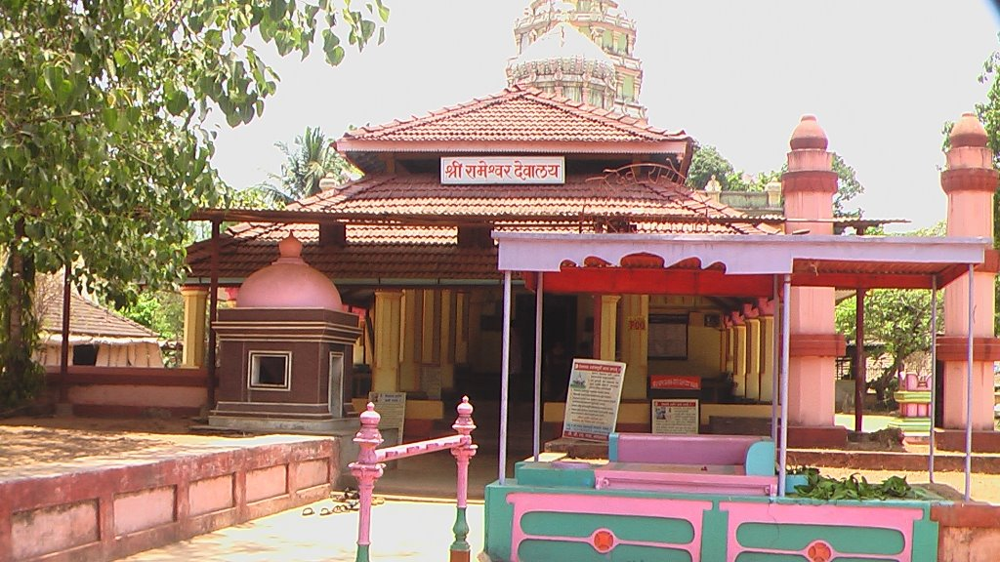

RAMESHWAR
Rameshwar is a small town located in the Sindhudurg district of Maharashtra, India. It is renowned for its ancient and revered Rameshwar Temple, dedicated to Lord Shiva. The temple is a significant pilgrimage site and holds great religious importance for devotees.
WHERE IT IS ?
It is located in the Achara village, Malvan Taluka, Sindhudurg district, Maharashtra which is about 20 km from Malvan town.
IMPORTANCE OF THIS PLACE :-
It is an ancient Lord Shiva temple built in Kokani-style wooden architecture, famous for its sacred Maha Shivratri celebrations, peaceful atmosphere, and the holy Pushkarni temple tank.
NEARBY PLACES FOR VISIT :-
STAYCATION
Stays are in Malvanor Achara in homestays, guesthouses & small resorts .
Cost for stay is ₹1,000 – ₹2,500 per night .
Food authentic are Malvani thali, seafood, solkadhi, modak, homely vegetarian meals also available .